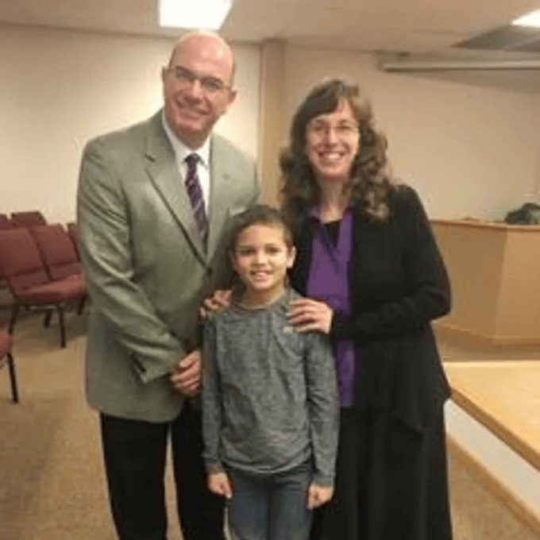
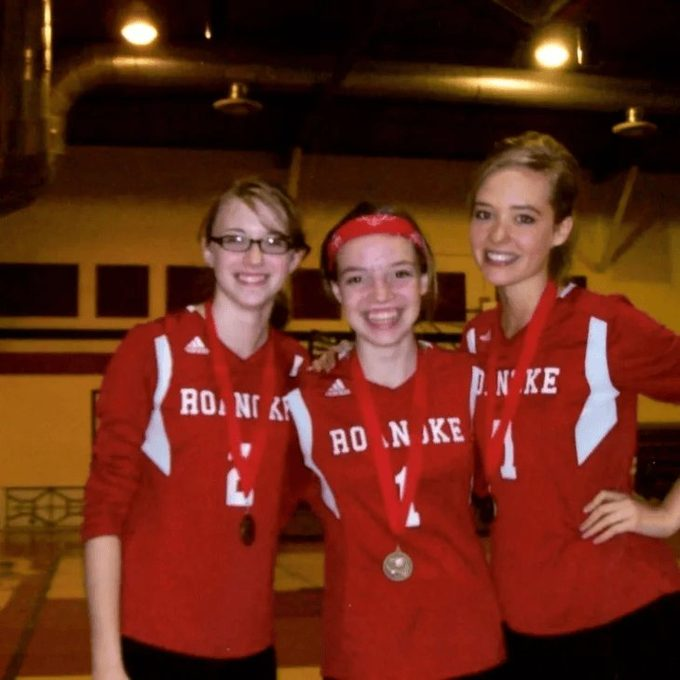
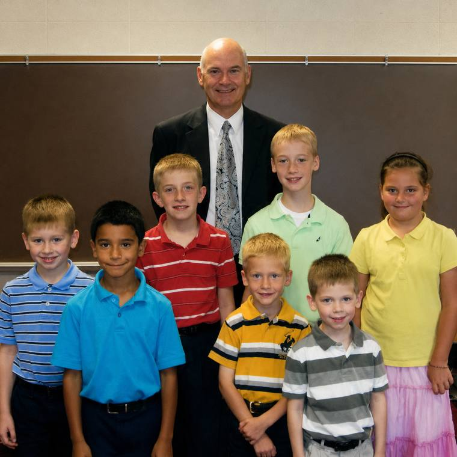

Our global mission is an extension of our local one: to reach the world from Roanoke, Indiana. There is a place for every member of your family to grow and serve.
Children
We help families set their children on a good trajectory. Our workers are dedicated to showing young children the right path.
Teens
A long heritage of youth work in the community. We help young people thrive for the Lord and prepare for tomorrow's world.
Missions
We support 46 missions families and endeavors around the world, carrying the gospel far beyond our own community.

Bus Ministry
Free transportation to our Sunday morning services, built on hope, faith, love, and the message of salvation.

Christian School (K-12)
A great legacy of preparing students for service to the Lord and for a bright future ahead of them.

Wednesday Kids' Clubs
Wednesday evenings are a great time to help our kids get excited about living for the Lord, with experienced teachers.
Kids' Missionary Club
Once a month during Ladies' Missionary Fellowship, children gather to learn about missions and the lives of missionaries.
Nursery Provided
Your baby means everything to you. A clean, safe, loving environment is provided by trained, qualified volunteers.